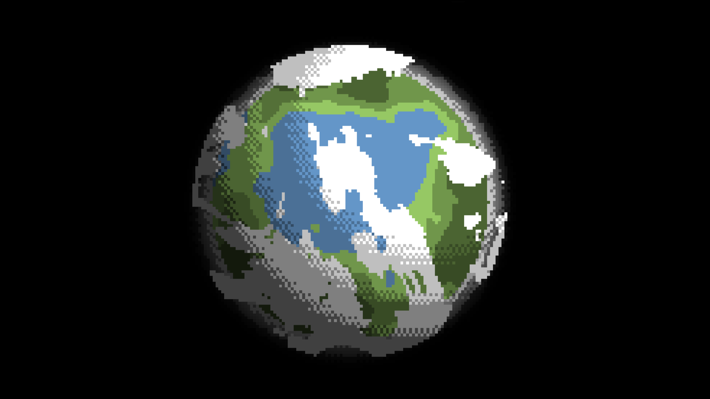
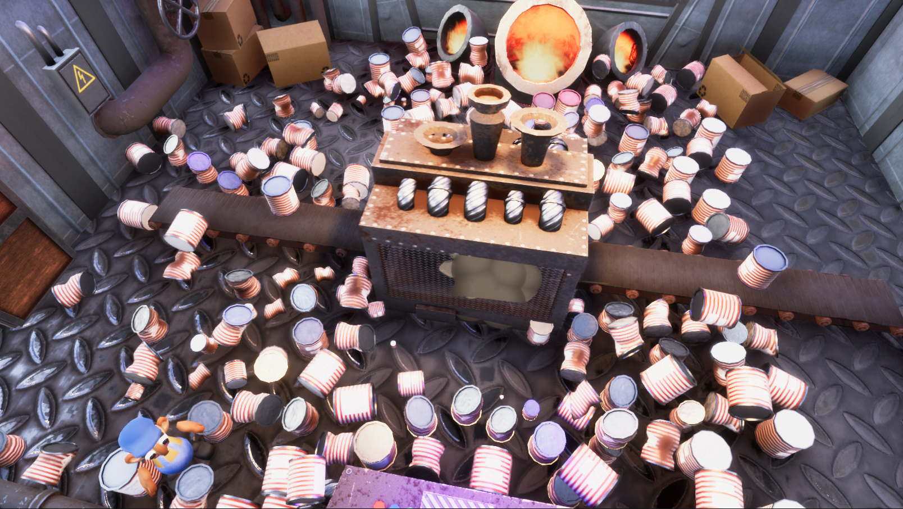
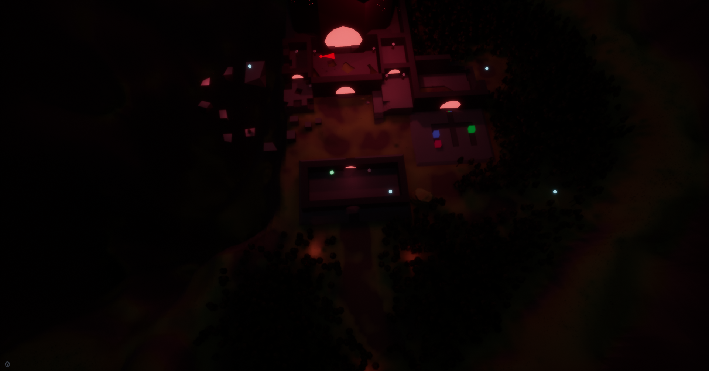
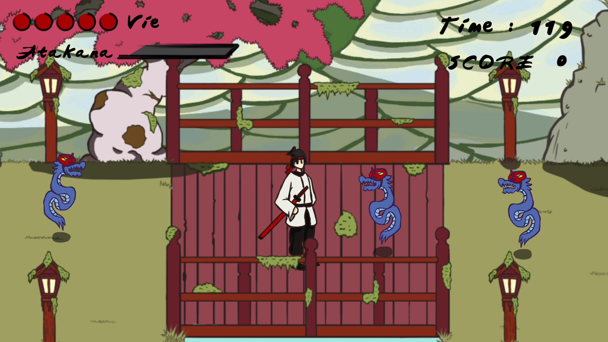
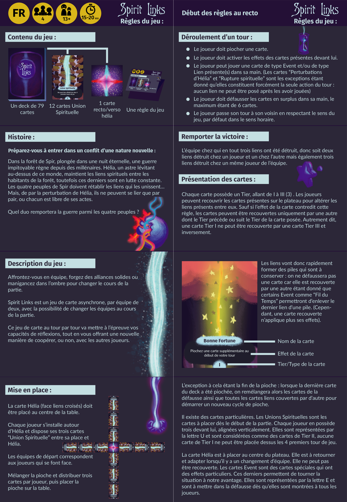

Here are various projects made during my studies and my free time, whether to explore new things or for even just for fun.
Shady Planet
A stylized planet generator, made in godot to practice with shader. Available on itch !

Boris and...
... the Miserable Factory of Mr. Bossman ! A satisfyingly crazy game where you gotta sort delicious soups from various garbage in order to get your employee of the month's gratification. Available on itch !

Victor and...
... the Mystery of the Mysterious Meat Machine ! Your first job ever, what could go wrong ? An investigation puzzle game with a zest of horror. Available on itch !
Sanctuary
The world tree is dying, your once luxuriant forest is now covered by darkness... A plateformer puzzle game. Available on itch !

Crimson Samurai
A ronin, a cursed sword, and a lot of demons to slay ! A beat them all game with a parry mechanic. Available on itch !

Spirit Links
The balance has been broken and formerly allied peoples are fighting against each other. An asynchronous team versus team boardgame with a twist.

My professional work
As employee and independant, I had the occasion to work on various professional projects, developing content intended for the industry.
Sydless
You're lost in a anomanicly distorted reality and must find a way out, but the further you progress the more your environment is withering. A super-fast-fps with a magic bouncing ball.
My Work:
Bouncing Ball: design and implementation of its mechanics and behavior
Character controller: evolutive velocity, gameplay states, input system
A poor soul trapped in a sword, seeking for redemption and hoping to free itself while climbing the sacred mountain. A 3D plateformer with complex movement mechanics.
My Work:
Quick Time Event: design and implementation of a QTE cinematic system
From the sordid sewers of Bonta to the cosy bonfires of Albuera, I contributed to the expansion of its world. The mythical French MMORPG, full of magic and mysteries.
My Work:
Update 2.62 - Level design: Bonta and Brakmar rework
Thanks to a variety of experience, I have refined my skills so it matches my needs and allows me to adapt to any workflow.
Programming being my most comfortable asset, I can freely explore the conception of systems and mechanics while keeping in mind the constraints and means required by these ideas. As such, I'm able to quickly determine the efforts required to develop certain tasks, what can be made easily and what requires more in-depth study.
These affinities naturally led me to enjoy and specialize in the making of game systems that are highly tweakable, independant and efficient. I love to create, but even more to organize my work so it is clear and easy to sustain, whether in its very design than the resources made alongside.
Finally, I also have a true interest in the gamefeel aspects of a game, also I have great experience when it comes to the implementation of these important details throughout development.
Motivations
Games have always been part of my life. Whether it be through children's play, sports, board games or of course video games, even daily tasks can be seen as such. Our world is full of wonders and I believe that it only requires a bit of fantasy to experience it the best way possible.
It was only natural to start learning development, as it seems to me like the most fun and practical way to bring my ideas to life. I just fell in love with its gymnastics of the mind, overcoming conceptual and technical challenges became a true hobbie.
Curious and willing, I'm always looking for new notions to learn, new concepts to explore and stuff to create. More than anything, I love to share my work and learn from others, as its feels like it gives sense to the act of creation.